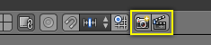

OpenGL渲染¶
OpenGL 渲染为快速 预览 渲染使用 3d 视图绘图
这允许你检查你的样片（比如物体运动，内错角等）
这也可以用作预览你的动画 -- 如果你的场景要在3D视图中实时播放相对系统又太过复杂时
你可以使用 OpenGL 来渲染图片和动画。
下面是 OpenGL 渲染和使用一个循环渲染引擎的最终渲染的比较

OpenGL 渲染 |
{kind=link}
Tip
仅显示渲染的物体
要使用该选项，在 显示面板 中启用 Only Render
当然这个选项并不特定于 OpenGL 渲染，启用它常常是很有用的，因为这可以移除像钻井平台和空矿车这些可能是干扰的数据。
设置¶
参考
菜单
多半情况下， OpenGL 渲染 使用视口设置，采样和 Alpha 透明模式选项可以通过信息编辑器页眉中 来设置。 另外，一些渲染设置也可以使用：
- 渲染尺寸
- 渲染方面
- 文件格式 & 输出 (文件路径，格式，压缩设置等)
渲染¶
从菜单激活 OpenGL 渲染将从活动的相机渲染
你也可以从 3D View 的头部使用显示 Camera 的小按钮来渲染任意视口。

OpenGL 渲染按钮
你可以使用 Esc 来终止正常的渲染
- 渲染一个静态图片
点击 3D 视图头部的显示 相机 的小按钮
或者从 信息编辑器 中的菜单:
- 渲染一个动画
在 3D 视图的头部点击显示 石板 的小按钮
或者从 信息编辑器 的头部中的 菜单:
- 从定序器渲染
点击 定序器 预览区域头部显示 石板 的小按钮
使用定序器中的场景脚本，你可以同时编辑场景到快速渲染整个拍摄序列。
这个可以通过在定序器回放头部的渲染图标来激活。
已知的限制¶
OpenGL 反锯齿支持¶
有些图形显卡不支持这些特征（被称为帧缓冲多重采样 OpenGL 扩展）。
在这种情况下渲染正常工作，但没有反锯齿效果。
启用 Full Sample，可以用作这个限制的变通方案，因为它不依赖硬件多重采样支持。
Hint
正确的扩展是必需的，如从 Save System Info （OpenGL 部分）输出所列出的：
GL_ARB_texture_multisampleGL_EXT_framebuffer_blitGL_EXT_framebuffer_multisample_blit_scaledGL_EXT_framebuffer_multisample